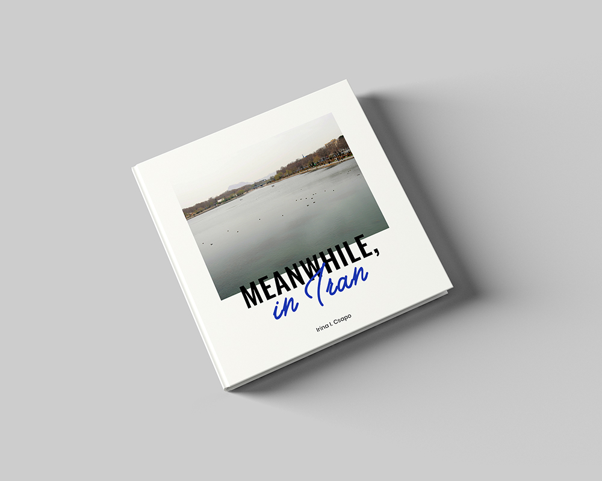
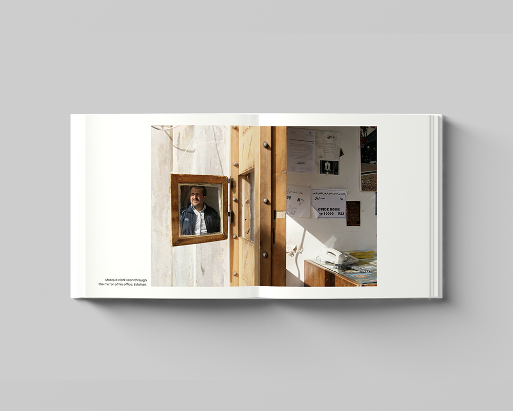
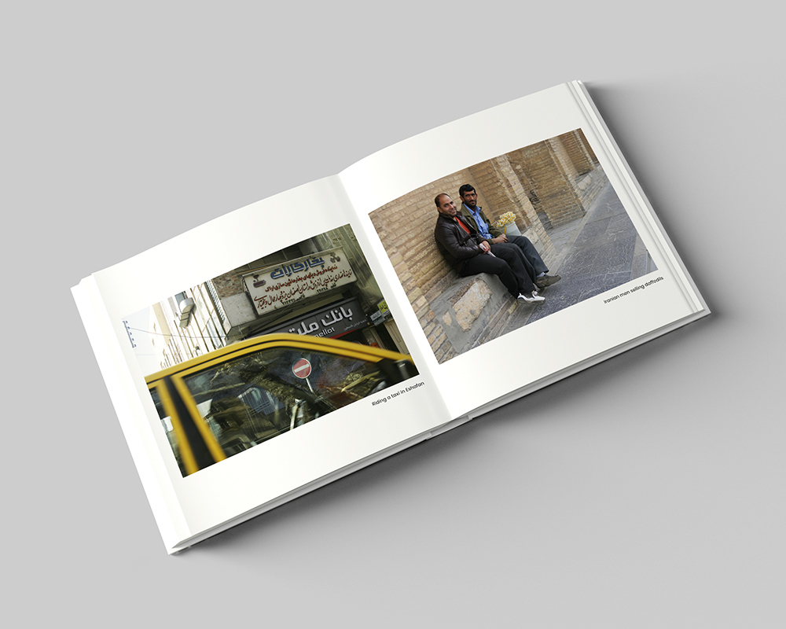

Meanwhile, in Iran
Meanwhile, in Iran is a photographic book with images I took while on a trip to Iran. The experience I've had of the country challenged my beliefs, stereotypes and everything I expected of the Middle Eastern country. The warmth of the people, the hospitality and friendliness, their excitement and curious onlooking on the streets remain all unmatched to any of my travels. In spite of what the internet and media had me believe as a young impressionable person, the nuclear scaremongering and the idea that Iran is somehow hostile to foreigners, my own personal journey contradicted everything I felt and experienced in Iran.
The trip to Iran took place while I was a photography student in London (Uni of Westminster), and I later used the series as one of my photography assignments as an opportunity to do my first photographic book. I had taken hundred of photos with my semi entry-level DSLR (the regret is that I didn't have better equipment with me). The editing process lasted around two months until I had settled on a number, series and precise order that I would often obsess and talk about with my tutor and colleagues. It was the first time I actually used InDesign so everything was new to me: the software, the art of editing your own work and the print process. I only printed one copy to have and to hold in my hands, but the whole experience gave me so much more.
The photographic book focuses on the everyday mundane in the Persian country as an antidote to the political unrest and diplomatic conflicts often depicted in the media. The everyday life of Iranian people and its simple truth was an absent concept from the collective consciousness. The photographs presented in the series are detached from widespread Arabic turmoil and focus on the country’s everyday slowly unfolding spirit. I visited Iran in the spring of 2011 and it was truly a life-changing opportunity for me. I don't know if I'll ever get to visit Iran again, but if there's a chance, I'd go in a heartbeat. More of this series can be found in the Meanwhile, in Iran photographic book, currently being re-edited to reflect the experience of my years as a designer.




